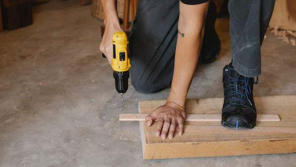
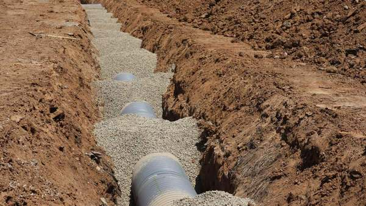
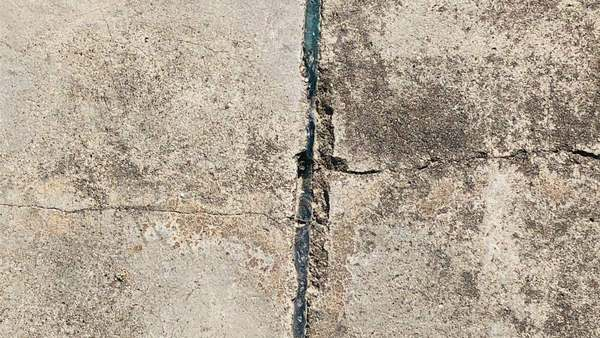
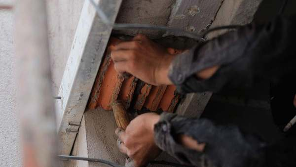
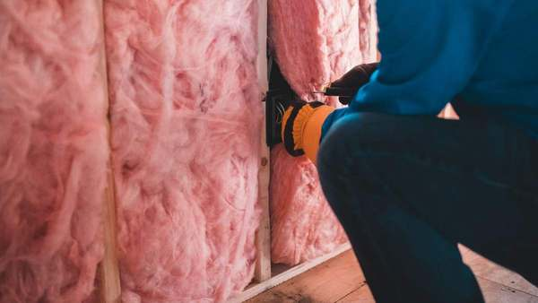
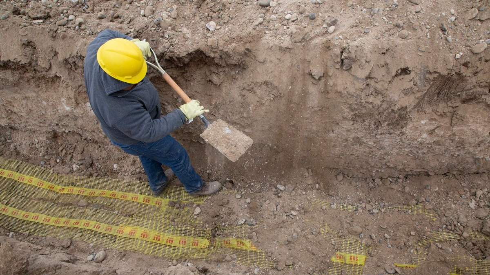

Foundation Repair & Crawl Space Stabilization in Savannah, GA
Sagging floors, cracked walls, and settling foundations don't level out on their own. We find what moved and why, then fix the support underneath it – across Savannah and Chatham County.
Structural work we handle across Savannah
Five distinct repairs, each with its own method and equipment. Which one you need is what the inspection determines.

Crawl Space Repair & Floor Jacks
Sagging, bouncy floors usually trace back to rotted joists or support posts settled into soft soil. We replace what's failed and set adjustable steel jacks on proper footings.
See details →
Foundation Piering & Underpinning
When a corner or wall is genuinely sinking, the fix is transferring its weight to stable soil below – galvanized helical or push piers driven to load-bearing depth.
See details →
Concrete Slab Leveling
Driveways, patios, walkways, and garage slabs that dropped at one edge get lifted back with injected polyurethane foam – hours of work, not days of demolition.
See details →
Foundation Crack Repair
Not every crack is structural, and telling the difference matters. We seal what's cosmetic and address the movement behind the ones that aren't.
See details →
Crawl Space Encapsulation
A sealed vapor barrier and a properly sized dehumidifier stop the ground moisture that rots framing – the repair that keeps the structural work from happening twice.
See details →We Diagnose First
Elevation readings and a crawl space walk before anything is quoted – not a price off a photo.
Written Scope
The findings and the plan in writing, with the reasoning behind each repair point.
Coastal Conditions
Sandy soil, a high water table, and year-round humidity change what actually holds up here.
Chatham County Focus
Savannah, the islands, Pooler, and Richmond Hill – not a national dispatch line.
Lowcountry ground doesn't behave like inland Georgia
Savannah sits on the coastal plain, where sandy soil and a high water table start just a few feet down. Dig much below that and you hit water – which is why homes here are raised crawl spaces or slab-on-grade rather than basements, and why the failures look different than they do an hour inland.
Sandy, water-carrying soil moves seasonally. Piers and footings that were level at build time settle unevenly as it does, and that's what shows up inside as a dip in the floor or a door that suddenly won't latch. Meanwhile the same humidity that makes summers here what they are sits under the house year-round, quietly rotting joists and girders in a vented crawl space.
Fixing the framing without addressing the moisture underneath it means doing the same repair again in a few years. That's why encapsulation and structural repair so often belong in the same conversation here.

Excavating for foundation workSigns worth an inspection
- Floors that flex or bounce underfoot
- A visible dip toward the middle of a room
- Doors or windows that stopped latching
- New cracks above door frames or in brick
- A driveway or patio slab dropped at one edge
- Standing water or musty air in the crawl space
Any one of these can be minor. Two or three together in the same part of the house usually isn't.
Three steps, nothing quoted before it's understood
1 Inspection
Elevation readings across the floor, a look inside the crawl space or at the slab, and a list of which support points have actually moved.
2 Findings and scope
The measurements, what they mean, and a written repair scope with a price – plus what happens if you leave it another season.
3 The repair
Crews work from the crawl space or the exterior. Most residential jobs are finished in one to three days without you moving out.
Savannah, the islands, and the towns around them
Historic downtown homes on brick piers, island properties in salt air, and newer slab-built subdivisions west of the city each fail differently – and get a different fix. Eighteen areas, written up one at a time.
Foundation repair in Savannah – common questions
Why do so many Savannah homes have crawl space and foundation problems?
Savannah sits on the coastal Lowcountry plain, where sandy soil and a high water table sit just a few feet below the surface. Soil that holds and sheds water unevenly moves seasonally, which shifts pier and footing support over time, and subtropical humidity under a vented crawl space is what rots joists and girders from below. It's the combination – moving soil plus constant moisture – rather than any one of them alone.
What does foundation repair cost in Savannah?
Most residential jobs land somewhere between about $1,600 and $4,100, and repairs involving several rotted floor joists or a run of new support jacks commonly fall in the $1,300 to $4,900 range. A full pier installation under a settling corner of the house goes higher; slab leveling usually costs less. The honest answer is that the number depends on how many support points are affected and how accessible the work is, which is exactly what the free inspection establishes before you're quoted anything.
Do homes in Savannah have basements?
Almost never. The water table here is high enough that digging more than a few feet tends to reach it, so Savannah homes are built as raised crawl spaces or slab-on-grade instead. That's why the work here is crawl space stabilization, piering, and slab leveling rather than the basement waterproofing you'd see further inland or up north.
How do I know if a sagging or bouncy floor is actually structural?
A floor that flexes as you walk across it, a noticeable dip toward the middle of a room, doors and windows that stopped latching properly, or new cracks appearing above door frames are the usual signs that something under the floor has moved or lost support. Any one of them on its own can be minor. Two or three of them together in the same part of the house usually means the support below needs looking at.
How do I know if a crack is serious?
Horizontal cracks in a foundation wall are the ones to act on soonest, because they indicate lateral pressure rather than settling. Stair-step cracks through mortar joints and cracks that keep reopening after repair suggest active movement. Fine vertical cracks in poured concrete that haven't changed in years are usually shrinkage.
Can you fix a sagging floor without replacing it?
Usually, yes. Sagging floors are almost always a support problem rather than a floor problem – rotted joists or settled posts underneath. Replacing the failed framing and setting adjustable jacks on proper footings addresses it from below, without pulling up the finished floor.
Why does everyone here talk about crawl space humidity?
Because in this climate it's what destroys the structure. Vented crawl spaces pull humid coastal air onto cool surfaces where it condenses, and wood held above roughly twenty percent moisture content rots. Structural repairs in a crawl space that stays damp have a limited lifespan, which is why encapsulation gets quoted alongside them.
How long does the work take?
Most residential jobs run one to three days on site. Slab leveling is often finished in a few hours. Where a badly settled floor is being recovered, the lift itself is staged over several visits across a few weeks so the structure moves gradually rather than cracking finishes.
Do I have to move out during the repair?
Almost never. Crawl space and piering work happens under and outside the house, and slab work is entirely exterior. You may hear equipment, but the living space stays usable.
Is the inspection really free?
Yes, including the elevation readings and the written findings, and whether or not you go ahead with any work. If the honest answer is that nothing needs doing yet, that is what the report says.
Do I need to be home for the inspection?
It helps, because we walk the findings with you at the end rather than leaving a report behind. We do need access to the crawl space hatch or the affected area, and enough room to work around the exterior of the house.
Do you charge for a second opinion?
No. If you have a quote from another contractor and want the reasoning checked, the inspection is the same free visit. Bring the quote – comparing what was proposed against what the measurements show is often the most useful hour in the whole process.
Which areas do you cover?
Chatham County in full – downtown, midtown, the Southside and Georgetown, plus every one of the islands from Isle of Hope and Thunderbolt out to Tybee – and the west side at Garden City, Port Wentworth, Pooler and Bloomingdale. Outside Chatham we cover Richmond Hill in Bryan County, Rincon and Springfield in Effingham, and Hinesville in Liberty. There are eighteen area pages on the site with the detail for each. If you are somewhere small in between, call and ask, because the answer is usually yes.
Still not sure what you are looking at? Book a free inspection →
Tell us what you're seeing
Describe the symptom and we'll come look at it – measurements, crawl space or slab, and a written scope if repair is warranted. No charge and no obligation either way.
Rather talk it through?
If the floor moved suddenly, or there's water standing under the house right now, calling gets you an answer faster than a form does.
A photo of the crack, the dip, or the crawl space tells us a surprising amount before we're on site.
Not sure whether it's serious yet?
That's what the inspection is for. We'll tell you plainly if it can wait – and what to watch for if it can.